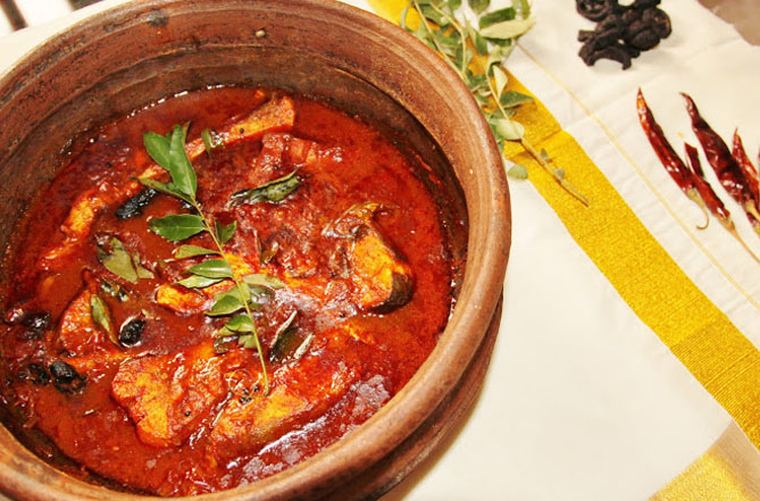
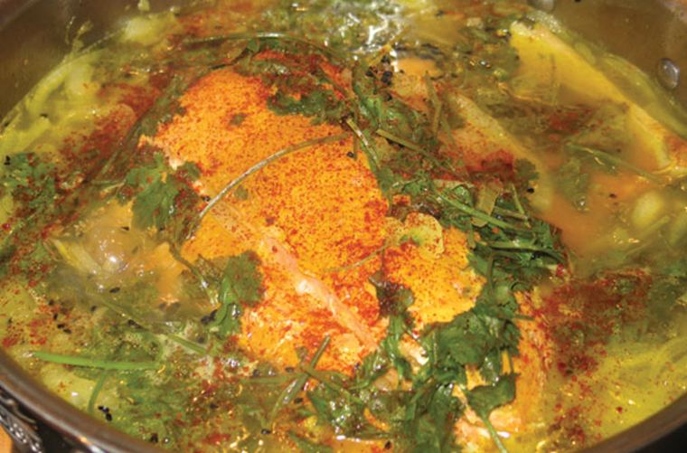

Curry Cut

Chilled · bone-in
Precisely cut for our traditional Indian recipes. Steaks cut across the fish, bone in — which is what holds their shape in a gravy and gives the curry its body. Straight from the pack into the pan.
- Fish
- Basa (Pangasius)
- Bones
- Bone-in curry steaks
- State
- Chilled
- Best for
- Pulusu, moilee, Bengali curry
- Processing
- Held at 0–4°C
- Packing
- Cryovac® vacuum shrink
- Shelf life
- 15 days
- Pack sizes
- On request
Cook with it
Recipes using this cut.

Fish Pulusu
Fish in tamarind curry sauce
Suggested cut — Curry Cut
Fish Moilee
Fish in coconut milk
Suggested cut — Curry Cut
Bengali Fish Curry
Mustard, coconut and green chilli
Suggested cut — Curry Cut